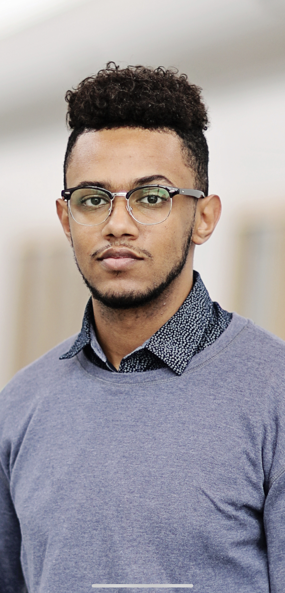

System.out.println("Hi, I'm Kidus! Welcome to my portfolio website!");
function aboutMe(){

"Hi! My name is Kidus. I am a senior at Wayne State College majoring in
CIS: Programmer/Analyst and minoring in Business Administration
I am originally from Ethiopia. I moved to the US at the age of 18 to pursue
my education in Computer science to fulfill my dream of becoming a software engineer.
I currently work as a Software Engineer Intern at Daycos and a Resident Assistant at WSC. I have great programming, analytical, web
development, and problem solving skills. In my free time, I like to play soccer, exercise, and try new places to eat. I have a strong passion for
programming, collaboration, and learning"
}
function experience(){
Software Engineer
Daycos,INC
January 2022 - Present• Add new features to our internal software based on user requests.
• Maintain and modify web applications to simplify transaction processing steps.
• Translate functional specifications into logical, component-based technical designs.
Software Engineering Intern
Daycos,INC
June 2021 - December 2022• Used Cypress testing framework and wrote a code to automate our testing process, which lowered the testing time by 85%.
• Proactively identified and built effective solutions to solve complex technical problems.
• Troubleshooted, debugged, and resolved issues with web-based applications, websites, and mobile applications.
• Collaborated with team of 4 to understand product vision and requirements; executed against plan to deliver high quality software.
IT Helpdesk Representative
Wayne State College
October 2019 - August 2021• Answered phone calls and emails regarding help desk issues
• Troubleshooted PC, printer, and network issues, imaging computers and other devices
• Installed security cameras, projectors, speakers, and computers in classrooms
• Recycled more than 1000 computers, printers, and monitors
Loan Consultant Intern
Wells Fargo Bank
June 2019 - August 2019• Worked with college students, parents, banks, financial institutions, and credit bureaus to help
students get private loans
• Analyzed credit scores, credit histories, and debt to income ratios to calculate interest rates on
student loans
• Acquired database handling, consultation, call center, and customer service skills
}
function projects(){
Wildcat Wheels mobile application• Created a mobile application for the ride service of Wayne State college
• Used Dart language and Flutter development toolkit to code this app for Android and IOS using a
single codebase
ECX mobile application• Developed a mobile application for Ethiopian Commodity Exchange
• ECX shows daily updated prices of commodities in the Ethiopian Commodity Exchange
• https://play.google.com/store/apps/details?id=www.ecx.ecx2
OCR web app• Coded a one-page web app that converts elements in image file to text
• Used HTML, CSS, and JavaScript for frontend and Node JS for backend
}